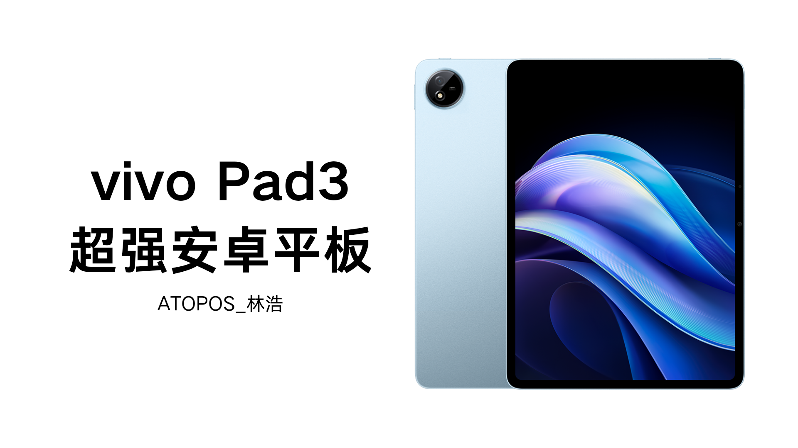
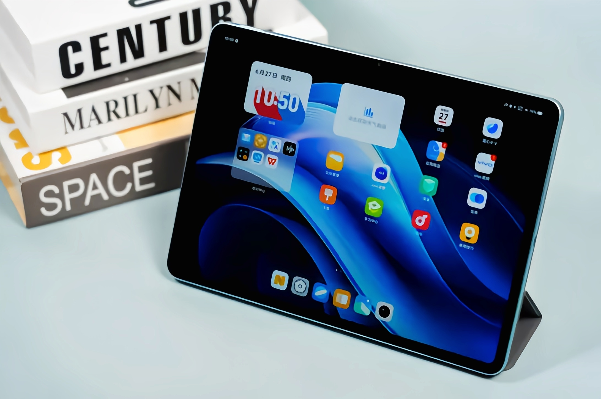
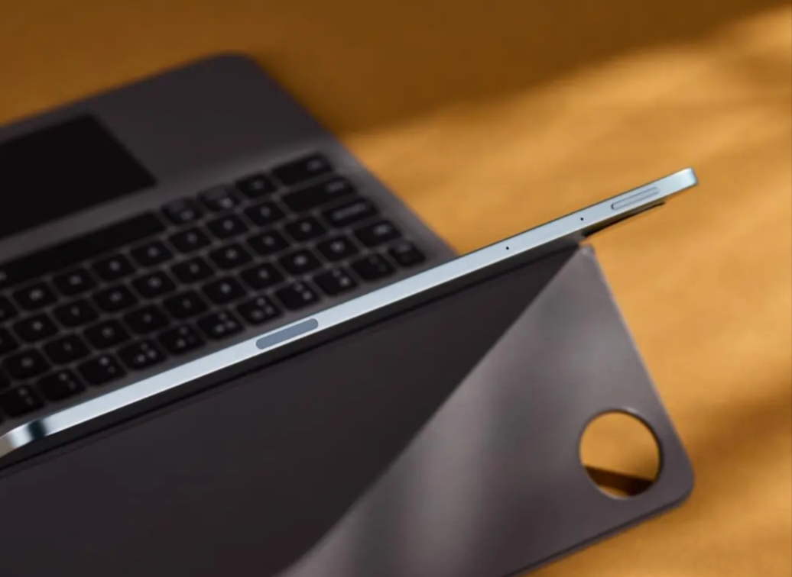
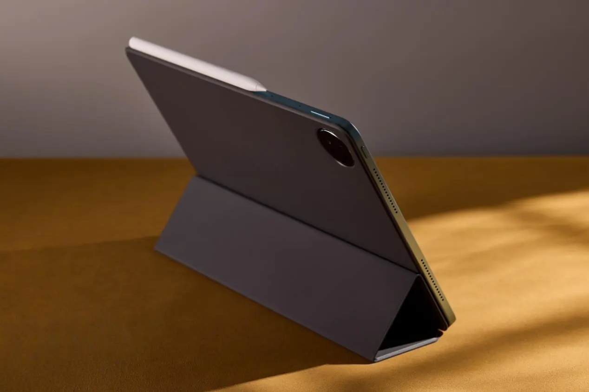
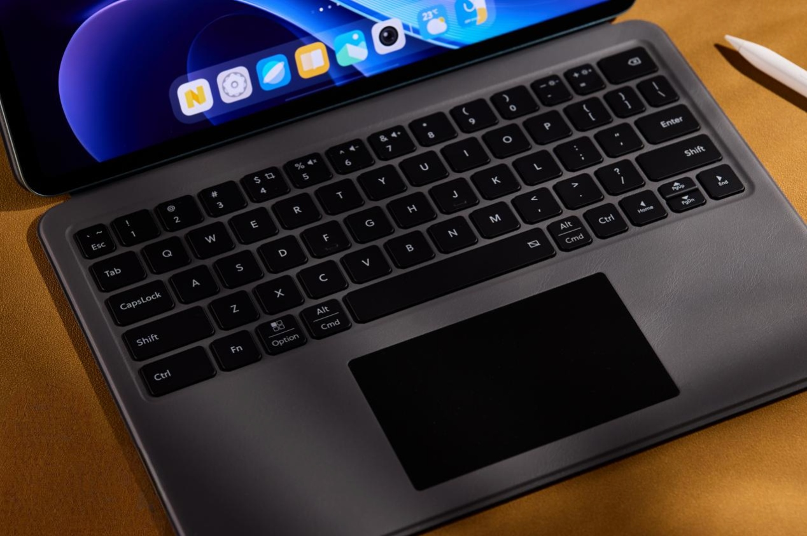
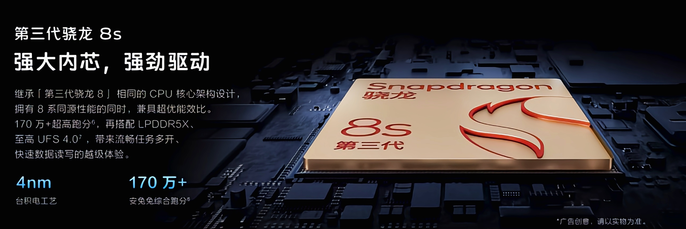
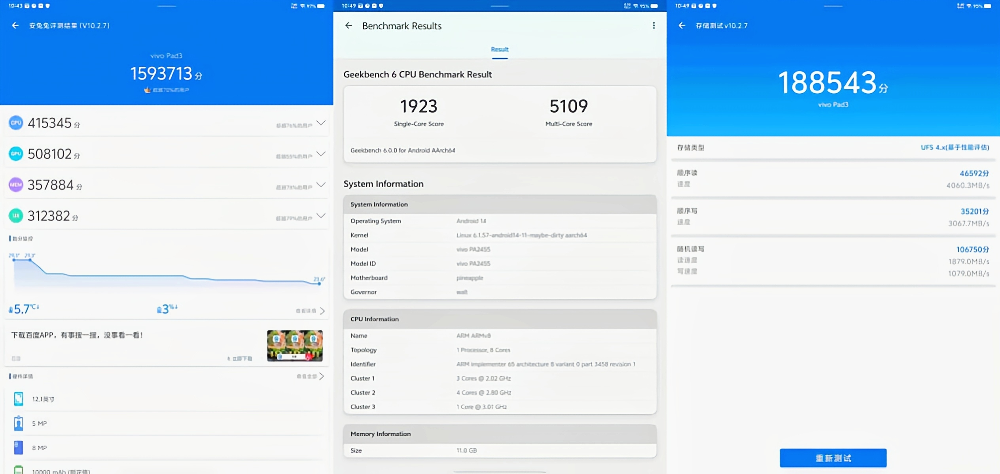
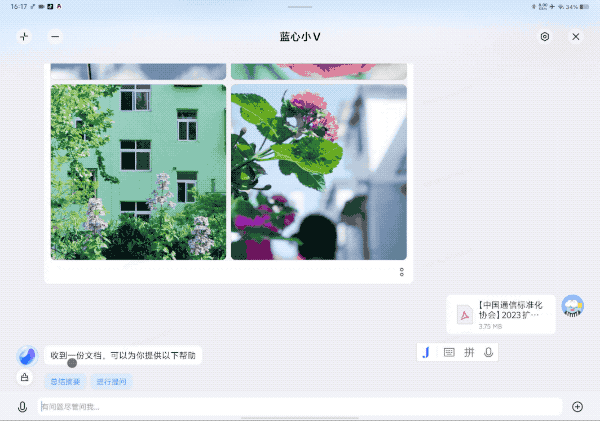

超强安卓平板
熟悉数码圈的“机友”们不难发现，如今的平板电脑产品配置方面已经趋于同质化，强性能+长续航+大屏幕的配置比比皆是，各家厂商想要做出特色，还得在自研系统、特色功能方面入手，打造更智能的体验才是消费者们的刚需。

外观设计
vivo Pad3 和 vivo Pad3 Pro 是一个系列，因此在外观上没有太大差别，平板背面也是简约的设计风格，采用一体化的金属机身，表面为细腻的喷砂材质。看起来真的是质感满满，vivo Pad3 春潮蓝配色呈现出一种淡蓝的色泽，清新淡雅，配合金属的材质更添几分高级感。
平板正面是一块 12.1 英寸的巨幕大屏，看起来很有视觉冲击力，整体上比较匀称。横向来看，屏幕顶部有一枚小小的前置摄像头，隐藏在黑色的边框中，不仔细看不容易发现。

在一体化的机身下，vivo Pad3 背面直接以短窄的弧线过渡到中框，所以中框的色泽、质感和背面也基本无异。值得一提的是，vivo Pad3 非常轻薄，机身厚度仅 6.57mm。vivo Pad3 的长和宽尺寸为 266.43mm×192mm，重量则为 589.2g，日常使用时拿在手上并不会觉得过于坠重。

机身元素方面，以横向来看，vivo Pad3 的顶部有音量键、麦克风和手写笔吸附点，底部无按键，机身左侧为扬声器开孔和电源键，右侧则是扬声器和 USB 接口。
vivo Pad3 还有配套的智能双面夹和智能触控键盘。智能双面夹表面为素皮材质，日常使用时可翻折过来作为平板的支架使用。智能触控键盘同样也是素皮的表面材质，键盘手感清脆，触控板面积适中，用它应对日常简单的办公处理还是可以的。


整体来说，vivo Pad3 拥有简洁而时尚的外观设计，金属质感高级，春潮蓝配色清新有活力，很适合年轻学生用户或者上班族们使用。
性能体验
在性能方面，vivo Pad3 搭载第三代骁龙 8s 移动平台，该芯片采用的仍然是高通 Kryo CPU，继承与第三代骁龙 8 顶级旗舰平台相同的全新 CPU 架构，包含一个主频为 3.0GHz 的超级内核、4 个主频高达 2.8GHz 的性能内核和 3 个主频为 2.0GHz 的效率内核。

在《安兔兔评测》V10 的测试中，vivo Pad3 取得了 1593713 的综合得分，其中 CPU 成绩为 415345 分，GPU 成绩为 508102 分。而在《GeekBench 6》的测试中，vivo Pad3 单核 1923 分，多核 5109 分，这个表现也是比较出色的。接着《安兔兔评测》做了存储性能的测试，vivo Pad3 的闪存顺序读取速度为 4060.3 MB/s，顺序写入的速度为 3067.7 MB/s，综合成绩为 188543 分。整体来说，vivo Pad3 的理论性能是非常优秀的，发挥出了第三代骁龙 8s 应有的性能水平。

功能体验
vivo Pad3 使用的是针对平板适配的OriginOS 4 系统，与手机上颇受好评的 OriginOS 系统在体验流畅度、交互等方面没有特别明显的区别，只是针对平板的大屏做了 UI 等方面的优化，因此习惯 vivo 手机的用户使用 vivo Pad3 自然也会很顺手。
实际体验过程中印象比较深的是 vivo Pad3 与办公相关的能力，使用vivo办公套件对于各种各样的操作可谓手到擒来。
然后就是vivo Pad3 与 AI 相关的能力，它搭载了 vivo 自研的蓝心大模型，可以实现很多智慧化的能力，为我们的日常使用以及办公带来便利。
例如在自带的蓝心小 V AI 助手中，你可以使用超能搜索功能，本机图片、文档、信息、日程、原子笔记等内容，都可以轻松找到。测试时，小编让它搜索相册里和花朵有关的照片，它就能很快帮我找出来。

同时它还可以进行超能问答，即给它网页或文档，就可以进行总结问答，或者随便问它一些百科知识、逻辑性问题等，也都能给到答案。
比如小编首先给它一份调查报告，让它帮忙对文档进行摘要，它果然很快就能给出准确的摘要，看摘要的结果，对照文档的内容还是比较贴切的。
得益于 vivo Pad3 的 12.1 英寸大屏，你还可以将分屏功能和蓝心小 V AI 大模型进行结合，以提升办公效率，比如在分屏状态下，左边是办公文档，右边是蓝心小 V，撰写 PPT 时可以让它帮忙生成大纲，然后一边对照一边写，简直效率翻倍。
总结
vivo Pad3 是一款各方面都基本没什么短板的安卓平板，性能上有第三代骁龙 8s+LPDDR5X 内存和 UFS 4.0 闪存的组合，12.1 英寸 2.8K 护眼原色屏让其在观影体验上也比较出众，续航则有 10000mAh 大容量电池和 44W 闪充的已经被市场验证的组合，而在日常使用上，vivo Pad3 还有 OriginOS 4 系统以及蓝心大模型带来的诸多实用功能，无论是影音、游戏娱乐，还是面对学习、轻度办公的场景，它都能游刃有余，加上 2379 元起步的售价，整体性价比甚至比此前 vivo Pad3 Pro 更胜一筹。
这下，你还不对这款诚意满满的安卓超强Pad 心动吗（别问为什么是超强，因为 vivo Pad3 Pro 是平板机皇）